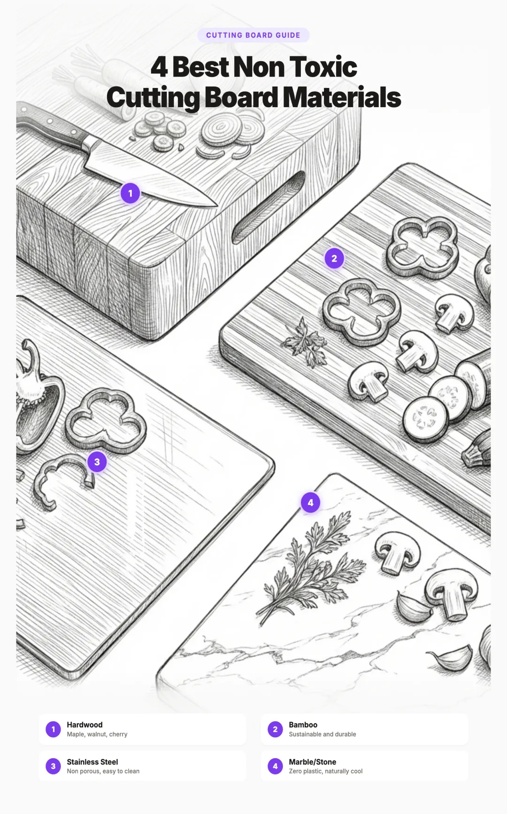

Best Non Toxic Cutting Boards: Wood, Bamboo, and Plastic Free Alternatives (2026)
Every time you drag a knife across a plastic cutting board, you are slicing microplastic particles directly into your food. A 2023 study published in Environmental Science & Technology found that a single plastic cutting board can release tens of millions of microplastic particles per year through normal kitchen use. Those polyethylene and polypropylene fragments end up in your salad, on your chicken, and mixed into everything you chop, dice, and mince.
The good news is that there are excellent alternatives. Wood, bamboo, and natural rubber cutting boards release zero microplastics, perform beautifully in the kitchen, and in many cases are actually more sanitary than the plastic boards most of us grew up with. This guide covers every material, breaks down the best options by budget and use case, and includes specific product recommendations to help you make the switch.
If you are also rethinking your cookware, check out our guide to cast iron vs stainless steel vs ceramic cookware for more ways to reduce plastic and chemical exposure in your kitchen.

1. The Problem with Plastic Cutting Boards
Plastic cutting boards have dominated kitchens for decades because they are cheap, lightweight, and dishwasher safe. But the convenience comes at a cost that researchers are only now beginning to quantify.
When a knife cuts into a plastic board, it creates grooves. Each groove releases tiny fragments of the board material into whatever food is being prepared. A 2023 study estimated that a single polyethylene cutting board used for normal meal preparation releases approximately 14 to 71 million microplastic particles per year. Over a ten year lifespan, that adds up to hundreds of millions of particles transferred directly to food.
The particles released range from visible shavings (the white dust you may have noticed collecting in knife grooves) down to nanoplastic particles invisible to the naked eye. The smaller the particle, the more easily it penetrates biological tissue. Nanoplastics have been shown to cross the gut barrier, enter the bloodstream, and accumulate in organs including the liver, kidneys, and brain.
The Bacteria Myth
For years, plastic cutting boards were recommended over wood because they were believed to be more sanitary. Research has shown the opposite. A landmark study from UC Davis by Dr. Dean Cliver found that bacteria on wood surfaces are pulled down into the wood fibers where they die, while bacteria on plastic boards survive in the knife scarred grooves, even after washing with soap and hot water or running through a dishwasher cycle.
New plastic boards are easy to sanitize. But the moment knife grooves appear (which happens after just a few uses) those grooves become permanent bacterial harbors. The more you use a plastic board, the less sanitary it becomes, and there is no way to restore the surface without physically sanding it down.
2. Wood Cutting Boards
Wood is the original cutting board material, used by cooks for centuries, and it remains the gold standard for food safety, knife care, and zero microplastic exposure. Not all wood boards are equal, though. The type of wood and the grain orientation make a significant difference.
Best Woods for Cutting Boards
- Hard maple (sugar maple). The most popular choice among professionals. Extremely hard, tight grained, and naturally antimicrobial. Maple has a Janka hardness rating of 1,450, which is firm enough to resist deep knife marks but soft enough not to damage blade edges. This is the wood used by John Boos, the most well known name in butcher blocks.
- Walnut. Slightly softer than maple (Janka 1,010) but still very durable. Walnut is a closed grain hardwood with natural oils that resist moisture. Its rich dark color hides stains beautifully and develops a gorgeous patina over time.
- Cherry. A medium hardness wood (Janka 995) that is gentle on knives and beautiful to look at. Cherry darkens naturally with age and use. It is a good middle ground between maple's hardness and walnut's softness.
- Teak. A tropical hardwood with natural oils that make it highly water resistant without frequent oiling. Teak is dense, durable, and naturally antimicrobial. The main consideration is sourcing: always look for FSC certified teak to ensure it is sustainably harvested.
Grain Types: End Grain vs Edge Grain vs Face Grain
The way wood is cut and assembled into a cutting board dramatically affects its performance, durability, and price.
End grain boards are constructed from short blocks of wood arranged with the fibers pointing upward. When you cut on an end grain board, the knife slips between the fibers rather than cutting across them. This makes the surface self healing: the fibers close back together after each cut, extending the life of both the board and your knives. End grain boards are the most expensive option but last decades with proper care.
Edge grain boards are made from long strips of wood glued side by side. The knife cuts across the edge of the grain, which is harder than end grain but still much gentler on knives than plastic or bamboo. Edge grain boards offer the best balance of price, durability, and performance for most home cooks.
Face grain boards use a single wide plank or a few wide planks glued together, showing the flat face of the wood. These are the least expensive and most visually dramatic, making them ideal for serving cheese and charcuterie. However, they show knife marks more readily and are more prone to warping over time.
3. Bamboo Cutting Boards
Bamboo is technically a grass, not a wood, and it grows remarkably fast, reaching maturity in three to five years compared to decades for hardwood trees. This makes it one of the most sustainable materials available for cutting boards. It releases zero microplastics and is naturally resistant to moisture absorption.
However, bamboo has some drawbacks worth understanding before you buy.
- Hardness. Bamboo is significantly harder than most hardwoods (Janka rating of approximately 1,380 to 1,680 depending on the species and processing). While this makes it durable, it also means it is tougher on knife edges than maple or walnut. If you care about maintaining razor sharp knives, bamboo may not be the best daily driver.
- Adhesives. Because bamboo culms are narrow, boards must be made by laminating many thin strips together. The glue used matters a lot. Lower quality bamboo boards may use formaldehyde based adhesives, which can off gas and degrade over time. Always look for boards that specify formaldehyde free or food safe adhesive.
- Splintering. Over time, bamboo boards can develop small splinters along the edges and in high use areas. Regular oiling helps prevent this, but it is a consideration compared to the smoother aging of hardwood boards.
- Silica content. Bamboo contains natural silica, which contributes to its hardness but also accelerates knife dulling compared to maple or walnut.
4. Rubber Cutting Boards
Natural rubber cutting boards are the best kept secret in the culinary world. Used extensively by professional chefs in Japan and high end restaurants worldwide, these boards combine the best properties of wood and plastic without the downsides of either.
The most respected names in this category are Hasegawa and Hi Soft, both Japanese manufacturers. Their boards are made from a blend of natural rubber and wood fiber, creating a surface that is:
- Extremely gentle on knife edges. Rubber gives slightly under the blade, reducing edge wear significantly compared to any other material.
- Nonporous. Unlike wood, rubber does not absorb liquids, odors, or stains. It can be sanitized with bleach solution without damage.
- Slip resistant. The rubber surface grips countertops naturally, eliminating the need for damp towels underneath.
- Zero microplastic release. Natural rubber is not a plastic polymer. It is a natural material harvested from rubber trees (Hevea brasiliensis) and does not shed synthetic particles.
- Dishwasher safe. Most rubber boards can handle the dishwasher, unlike wood.
- Resurfaceable. When the surface gets worn, it can be sanded smooth and restored.
The main downsides are weight (rubber boards are heavy) and aesthetic appeal (they look utilitarian rather than beautiful). If you want a board that performs at the highest level and you do not mind a more workmanlike appearance, rubber is hard to beat.
5. Glass and Ceramic Boards
Glass and ceramic cutting boards are marketed as hygienic and stylish, but they are the worst choice for actual food preparation. Here is why we do not recommend them:
- Knife damage. Glass and ceramic are far harder than steel, causing rapid edge degradation with every stroke.
- Slippery surface. Food slides around on glass, making cuts less precise and increasing the risk of accidents.
- Breakable. Drop a glass board and it shatters into dangerous shards.
- Noise. The constant clinking of metal on glass is unpleasant for the cook and anyone nearby.
If you already own glass or ceramic boards, repurpose them as serving platters or trivets. For actual cutting, switch to wood, bamboo, or rubber.
6. Material Comparison Table
| Material | Microplastics | Knife Friendliness | Best For |
|---|---|---|---|
| Wood (end grain) | Zero | Excellent | Heavy daily use, meat prep, all purpose |
| Wood (edge grain) | Zero | Very Good | Daily use, vegetables, best value in wood |
| Bamboo | Zero | Moderate | Budget friendly, eco conscious cooks |
| Natural rubber | Zero | Excellent | Professional use, knife enthusiasts, sushi prep |
| Plastic (PE/PP) | 14 to 71M/year | Moderate | Not recommended |
| Glass/Ceramic | Zero | Terrible | Serving only, not for cutting |
7. Best Cutting Boards by Budget
Budget (Under $40)
If you are looking for a solid plastic free board without a large investment, bamboo or face grain wood boards are your best options. The Totally Bamboo Original Bamboo Cutting Board is a well made, affordable board with formaldehyde free construction. It is large enough for serious meal prep and holds up well over time with regular oiling.
Mid Range ($40 to $100)
This is where you start getting into genuinely excellent boards that will last for years. Edge grain hardwood boards from reputable makers hit the sweet spot between performance and price. The Teakhaus Edge Grain Teak Cutting Board is a standout pick. Teak's natural oils make it exceptionally water resistant, and the edge grain construction provides a durable, knife friendly surface. This is the board we recommend most for everyday home cooking.
Premium ($100 to $250+)
End grain boards and professional rubber boards live in this range, and they represent the pinnacle of cutting board performance. The John Boos Maple End Grain Cutting Board is the gold standard in American butcher blocks. Made from sustainably sourced hard maple in Effingham, Illinois, these boards have been trusted by butchers and chefs for over a century. They are heirloom quality and will last decades with proper care.
For those who want the absolute best knife protection, the Yoshihiro Hi-Soft Professional Rubber Cutting Board is the choice of professional sushi chefs across Japan. It is nonporous, dishwasher safe, and gentler on knife edges than any other material on the market.
8. Product Recommendations
John Boos Maple End Grain Block
The benchmark for quality cutting boards. John Boos has been manufacturing butcher blocks since 1887. Their end grain maple boards feature a self healing surface that absorbs knife cuts rather than scarring permanently. Available in multiple sizes, the 20x15 inch is the most popular for home kitchens. Each board is made from North American hard maple and finished with food safe oil.
Why we recommend it: Unmatched durability, self healing end grain, zero microplastics, heirloom quality, made in the USA.
Teakhaus Edge Grain Teak Board
Teakhaus sources their teak from sustainable plantations and produces some of the best value hardwood boards available. Their edge grain boards feature a built in juice groove and hand grip edges. Teak's high natural oil content means it requires less maintenance than maple and is naturally resistant to water damage, warping, and cracking.
Why we recommend it: Best value in hardwood, minimal maintenance, naturally water resistant, sustainably sourced teak.
BoardSmith End Grain Cutting Board
For those who want an artisan quality board that doubles as a kitchen showpiece, BoardSmith creates stunning end grain boards from premium hardwoods. Their boards are handcrafted in small batches using walnut, maple, and cherry in beautiful patterns. Each board is finished with multiple coats of food safe oil and wax. These are the boards you see in high end kitchen photography, and they perform as well as they look.
Why we recommend it: Artisan craftsmanship, stunning aesthetics, premium hardwoods, heirloom gift quality.
Totally Bamboo Original Cutting Board
The most affordable plastic free option that does not compromise on quality. Totally Bamboo uses Moso bamboo, which is harvested sustainably and does not displace panda habitat (pandas eat a different species). Their boards are laminated with formaldehyde free adhesive and come in a range of sizes. The large 18x12.5 inch size handles most meal prep tasks comfortably.
Why we recommend it: Most affordable option, sustainable bamboo, formaldehyde free, widely available.
Yoshihiro Hi-Soft Professional Rubber Board
The cutting board of choice for professional Japanese chefs. The Hi Soft is made from a proprietary blend of natural rubber and wood pulp that provides an incredibly soft cutting surface. It is nonporous so it does not absorb odors or stains, can be sterilized with bleach, and goes through the dishwasher without damage. At about 1 inch thick, it has substantial weight that keeps it firmly planted on your counter.
Why we recommend it: Best knife protection available, professional grade, nonporous, dishwasher safe, zero microplastics.
9. Care and Maintenance
Proper care is what separates a cutting board that lasts two years from one that lasts twenty. The maintenance requirements differ by material.
Wood Board Care
- Daily cleaning: Wash with warm water and mild dish soap immediately after use. Never submerge a wood board in water or put it in the dishwasher. Wipe dry with a towel and stand it upright to air dry completely.
- Oiling schedule: Apply food grade mineral oil once a month, or whenever the wood looks dry or lighter in color. For new boards, oil once a week for the first month to build up a protective layer. A simple test: if water no longer beads on the surface, your board needs oil.
- Deep conditioning: Every few months, apply a butcher block conditioner (a blend of mineral oil and beeswax or carnauba wax) for deeper protection. The Howard Butcher Block Conditioner is a trusted option that combines mineral oil with beeswax and carnauba wax for long lasting protection.
- Deodorizing: Rub the surface with half a lemon and coarse salt to remove stubborn odors from garlic, onions, or fish. Let it sit for five minutes, then rinse and dry.
- Resurfacing: If deep knife marks develop, sand the board with fine grit sandpaper (starting at 150, finishing at 220) to restore a smooth surface. Reapply several coats of oil after sanding.
Bamboo Board Care
Bamboo requires the same care as wood: hand wash, never dishwasher, oil regularly. Because bamboo is harder and less porous than most hardwoods, it may need slightly less frequent oiling, but it is more prone to cracking if neglected. Oil every three to four weeks and keep it away from heat sources when drying.
Rubber Board Care
Rubber boards are the easiest to maintain. Most are dishwasher safe, and they do not need oiling. For daily cleaning, wash with hot water and dish soap. For deep sanitizing, use a diluted bleach solution (one tablespoon per gallon of water). Allow to air dry. If the surface becomes worn, it can be sanded with fine grit sandpaper to restore a smooth finish.
10. When to Replace Your Cutting Board
No cutting board lasts forever, but different materials have very different lifespans.
- Plastic boards: Replace immediately. The health risks from microplastic contamination are not worth the convenience. If the board has visible knife marks, it has already released millions of particles into your food.
- Wood boards (well maintained): 10 to 20+ years for end grain, 5 to 15 years for edge grain, 3 to 8 years for face grain. A quality end grain board can truly last a lifetime with regular oiling and occasional resurfacing.
- Bamboo boards: 3 to 7 years. Replace when you notice deep cracks, persistent splintering, or the board no longer lies flat.
- Rubber boards: 5 to 15 years depending on use intensity. Professional kitchens replace them more frequently, but home cooks can expect many years of service. Replace when deep grooves can no longer be sanded out.
Signs it is time to replace any cutting board:
- Deep grooves that cannot be sanded smooth
- Persistent odors that do not respond to cleaning
- Warping or cracking that creates an unstable surface
- Mold growth in cracks or along edges
- Soft or spongy spots (in wood) indicating rot
11. Environmental Impact
Beyond personal health, the material you choose for your cutting board has environmental implications worth considering.
- Plastic boards are made from petroleum based polymers (polyethylene or polypropylene). They are technically recyclable but rarely accepted by curbside programs due to food contamination. Most end up in landfills where they persist for centuries, slowly breaking down into the microplastics that now contaminate soil, waterways, and oceans worldwide.
- Bamboo has the lowest environmental footprint. It grows to maturity in three to five years without pesticides or irrigation, sequesters more carbon per acre than most hardwood forests, and is fully biodegradable at end of life. If sustainability is your primary concern, bamboo is the strongest choice.
- Hardwood boards from sustainably managed forests (look for FSC certification) are an excellent environmental option. Wood sequesters carbon throughout its life, and a quality board used for decades has a far lower lifetime environmental impact than a series of plastic boards replaced every few years. At end of life, wood is fully compostable.
- Rubber boards are made from natural rubber harvested from trees that continue growing after tapping. The environmental footprint is moderate. They are not biodegradable in the way wood is, but their extremely long lifespan means less frequent replacement and less total waste.
- Glass boards are energy intensive to produce but last indefinitely and are recyclable. However, since we do not recommend them for cutting, their environmental profile is less relevant to this discussion.
12. Frequently Asked Questions
Yes. A 2023 study published in Environmental Science & Technology found that plastic cutting boards can release tens of millions of microplastic particles per year through normal chopping and slicing. Knife cuts create grooves that shed polyethylene and polypropylene fragments directly into food. Over the lifetime of a single plastic cutting board, hundreds of millions of particles may be transferred to food.
Contrary to popular belief, wood cutting boards can be more sanitary than plastic. Research from UC Davis found that bacteria on wood surfaces die off over time, while knife scarred plastic boards trap bacteria in grooves where they survive washing and even dishwasher cycles. Hardwoods like maple have natural antimicrobial properties that actively inhibit bacterial growth.
Hardwood (especially maple, walnut, or cherry) and natural rubber are the safest cutting board materials. Both release zero microplastics, are gentle on knives, and do not harbor bacteria the way scarred plastic boards do. End grain wood boards are particularly durable and self healing because the wood fibers close back together after cuts.
Bamboo is a plastic free option and more sustainable than many hardwoods, but it has drawbacks. Bamboo is harder than most woods, which can dull knives faster. It also requires adhesives to laminate the strips together, and some lower quality boards use formaldehyde based glues. If you choose bamboo, look for boards that use food safe, formaldehyde free adhesive and oil them regularly to prevent cracking.
Oil your wood cutting board once a month with food grade mineral oil or a dedicated butcher block conditioner. New boards should be oiled once a week for the first month to build up protection. If water no longer beads on the surface, it is time to oil. Regular oiling prevents cracking, warping, and bacterial absorption, and extends the life of the board significantly.
Professional chefs, especially in Japan, favor natural rubber cutting boards like the Hasegawa Hi Soft because they are extremely gentle on knife edges, do not slip, absorb impact to reduce hand fatigue, and are nonporous so they do not harbor bacteria. They release zero microplastics, are dishwasher safe, and can be resurfaced when worn. They combine the best properties of wood and plastic without the downsides of either.
Related Articles
- Cast Iron vs Stainless Steel vs Ceramic Cookware
Compare the safest cookware materials and find the right fit for your kitchen. - Best Plastic Free Food Storage Containers
Glass, stainless steel, and silicone containers compared for safety and durability. - How to Avoid BPA and Phthalates in Everyday Products
A room by room guide to reducing harmful chemical exposure at home. - How to Start Reducing Plastic Exposure
A practical priority guide for reducing plastic in your daily routine.